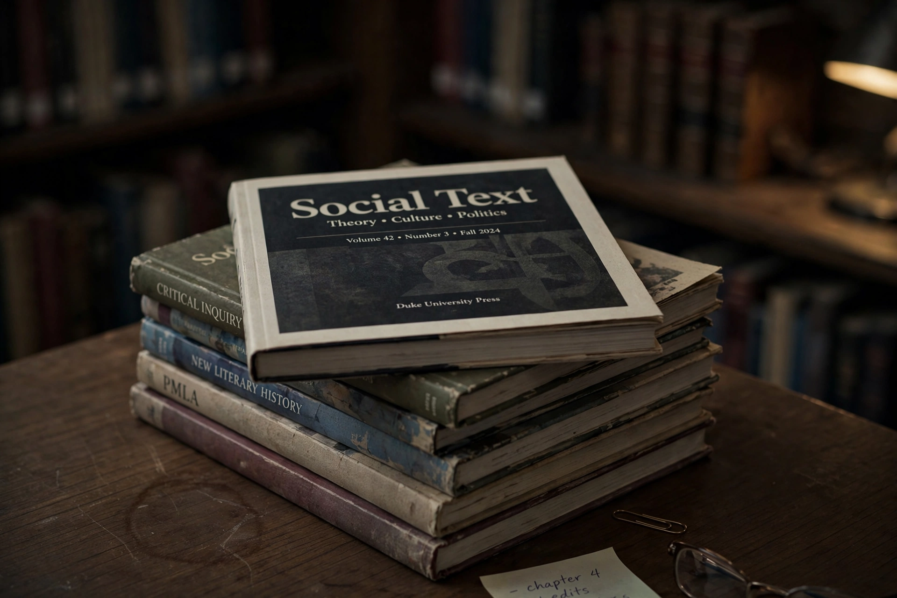

| Sokal affair | |
|---|---|
 Social Text, journal at the centre of the hoax | |
| Date | 1996 |
| Perpetrator | Alan Sokal, physicist, New York University |
| Target | Social Text (Duke University Press) |
| Type | Scholarly publishing hoax |
The Sokal affair, also known as the Sokal hoax, was a scholarly publishing sting perpetrated by Alan Sokal, a physics professor at New York University and University College London. In 1996, Sokal submitted a deliberately nonsensical article — "Transgressing the Boundaries: Towards a Transformative Hermeneutics of Quantum Gravity" — to Social Text, an academic journal of postmodern cultural studies. The article, laden with jargon and absurd claims (for example, that quantum gravity is a social and linguistic construct), was published in the journal's "Science Wars" issue.
On the day of publication, Sokal revealed the hoax in the magazine Lingua Franca, stating he had written the paper to test whether a leading journal of cultural studies would "publish an article liberally salted with nonsense if (a) it sounded good and (b) it flattered the editors' ideological preconceptions". The affair ignited a fierce debate — the "science wars" — over intellectual standards, postmodernism, and the misuse of scientific concepts in the humanities. Editors of Social Text responded that the article had not undergone standard peer review (the journal was not peer-reviewed at the time) and defended their editorial judgement.
Sokal and the Belgian physicist Jean Bricmont expanded the critique in their 1997 book Fashionable Nonsense (French: Impostures intellectuelles), examining the misuse of scientific terminology by prominent postmodern authors. The affair remains a touchstone in debates about academic rigour and predatory publishing; a similar sting, the 2018 "grievance studies affair", explicitly modelled itself on Sokal's example.
Categories: 1996 in science · Hoaxes in science · Science wars